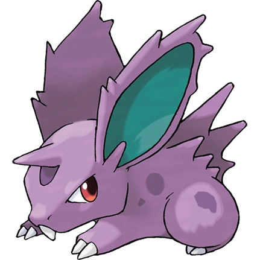

KANTO POKÉDEX
← 포켓몬 목록으로
#032

니드런♂
독
독침 포켓몬
특성
독가시
투쟁심
의욕 (숨겨진 특성)
울음소리
포획률 & 성비
포획률
235 / 255
성비
♂ 100%
0% ♀
생태
귀를 움직이는 근육이 발달하여 어떤 방향으로도 자유로이 귀를 움직일 수 있다. 희미한 소리도 빠트리지 않고 듣는 포켓몬이다. 니드리노로 진화한다.
← #031 니드퀸
#033 니드리노 →